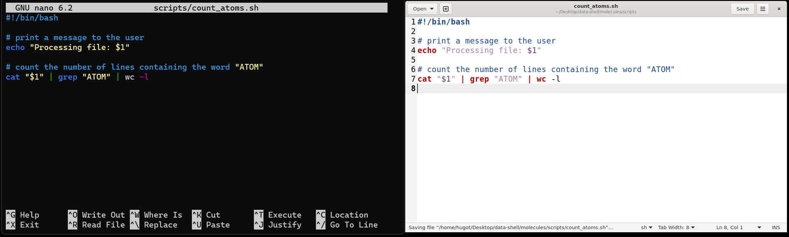
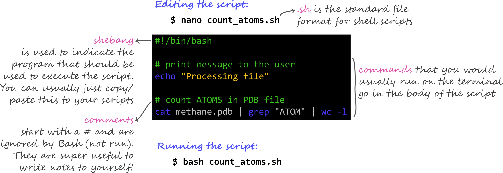

7 Shell Scripts
- Create files from the command line using a text editor.
- Write a shell script that runs a command or series of commands for a fixed set of files.
- Run a shell script from the command line.
7.1 Shell Scripts
So far, we have been running commands directly on the console in an interactive way. However, to re-run a series of commands (or an analysis), we can save the commands in a file and execute all those operations again later by typing a single command. The file containing the commands is usually called a shell script (you can think of them as small programs).
For example, let’s create a shell script that counts the number of atoms in one of our molecule files (in the molecules directory): We could achieve this with the following command:
cat cubane.pdb | grep "ATOM" | wc -lTo write a shell script we have to save this command within a text file. But first we need to see how we can create a text file from within the command line.
The text editor we will use from the command line is not installed by default on MobaXterm. To do so, run the following command:
apt install nanoWhen asked, type “y” to continue, then “y” again to confirm the installation. Several packages will start downloading and installing.
7.2 Editing Files
There are many text editors available for programming, but we will cover two simple ones that can be called from the command line: nano, which is purely based on the terminal; and gedit, which has a graphical user interface.
We can create a file with Nano in the following way:
nano count_atoms.shThis opens a text editor, where you can type the commands you want to save in the file. Note that the mouse does not work with nano, you have to use your
For now, type this code to your script (or copy-paste it):
#!/bin/bash
# count the number of lines containing the word "ATOM"
cat cubane.pdb | grep "ATOM" | wc -lTwo things to note about our code:
- We started the script with a special
#!/bin/bashline, which is known as a shebang. The shebang is optional, but in some cases is used to inform that this script should use the programbashto be executed. - The other line starting with the
#hash character is known as a comment and is not executed bybash(it is ignored). Comments are extremely useful because they allow us to annotate our code with information about the commands we’re executing.
Once we’re happy with our text, we can press Ctrl+X to exit the program.
As we have made changes to the file, we will be asked the following:
Save modified buffer?
Y Yes
N No ^C CancelThat’s a slightly strange way that nano has of asking if we want to save the file. We can press Y and then we’re asked to confirm the file name. At this point we can press Enter ↵ and this will exit Nano and take us back to the console.
We can check with ls that our new file is there.
Note that because we saved our file with .sh extension (the conventional extension used for shell scripts), Nano does some colouring of our commands (this is called syntax highlighting) to make it easier to read the code.

Alternatively, you can use the gedit text editor, which is a little more user-friendly (but is not always available, for example on macOS). The command to open a script is: gedit count_atoms.sh. This opens the text editor in a separate window, which has the advantage that you can work on the script while having the terminal open.
You can save the file using Ctrl+S. Remember to save your files regularly as you work on them.
When we say, “nano and gedit are text editors”, we really do mean “text”: they only work with plain character data, not tables, images, or any other human-friendly media. We use it in examples because it is one of the least complex text editors. However, because of this trait, it may not be powerful enough or flexible enough for the work you need to do after this workshop.
On Unix systems (such as Linux and Mac OS X), many programmers use Emacs or Vim. Both of these run from the terminal and have very advanced features, but require more time to learn.
Alternatively, programmers also use graphical editors, such as Visual Studio Code. This software offers many advanced capabilities and extensions and works on Windows, Mac OS and Linux.
7.3 Running Scripts
Now that we have our script, we can run it using the program bash:
bash count_atoms.sh16Which prints the result of running those commands on our screen. In summary, running a shell script is exactly the same as running the commands one-by-one on the shell.
However, saving our commands in a script has some advantages: it serves as a record of our analysis, making it more reproducible and it allows us to adapt and reuse our code to run other similar analysis.
7.4 Exercises
7.5 Summary

- The
nanotext editor can be used to create or edit files from the command line.- The
gedittext editor is a graphical alternative available on most Linux distributions. - A recommended graphical text editor availabe on all major operating systems is Visual Studio Code.
- The
- We can save commands in a text file, which we call a shell script. Shell scripts have extension
.sh. - Shell scripts can be executed using the program
bash.